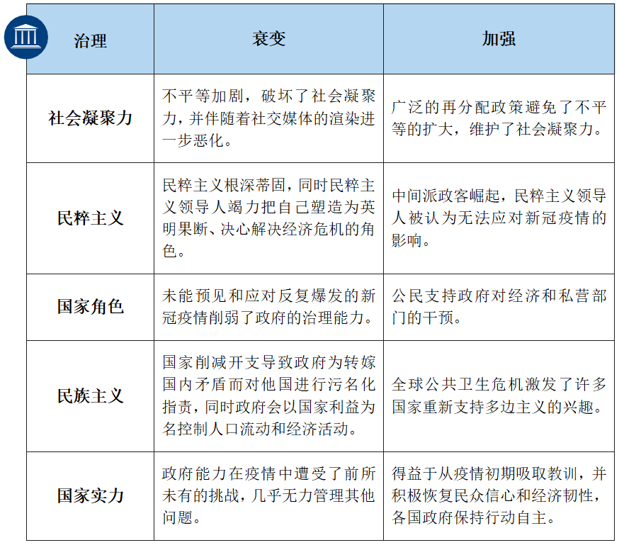
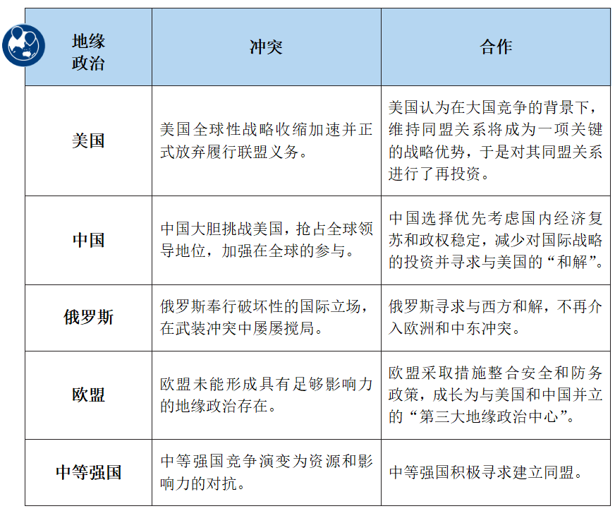
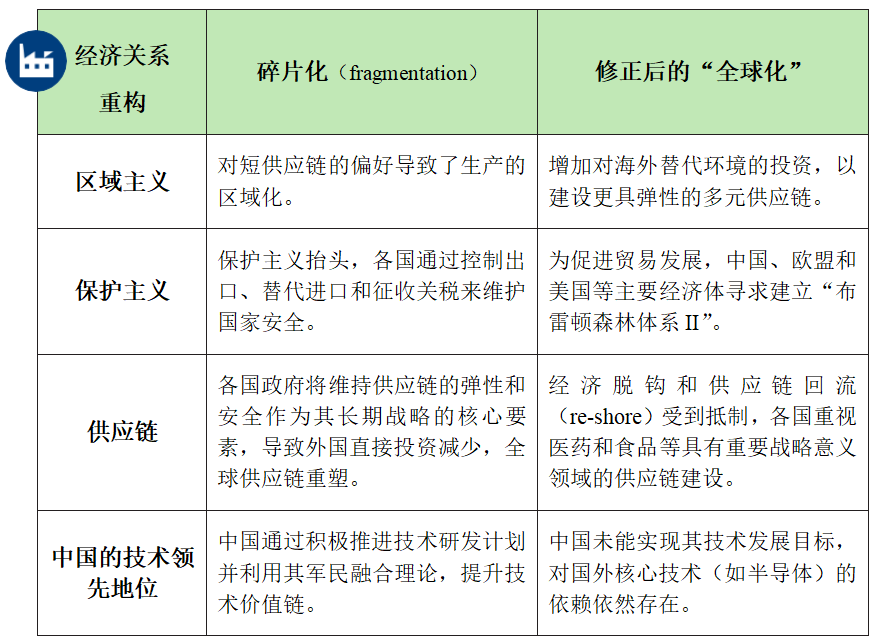
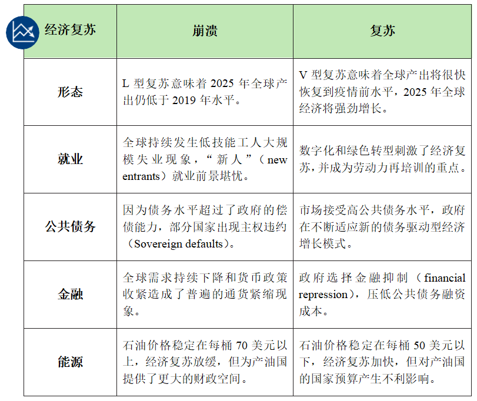
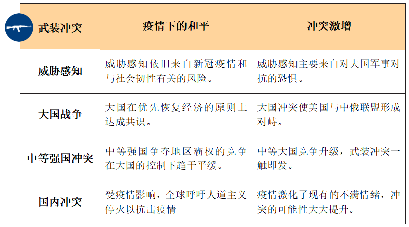
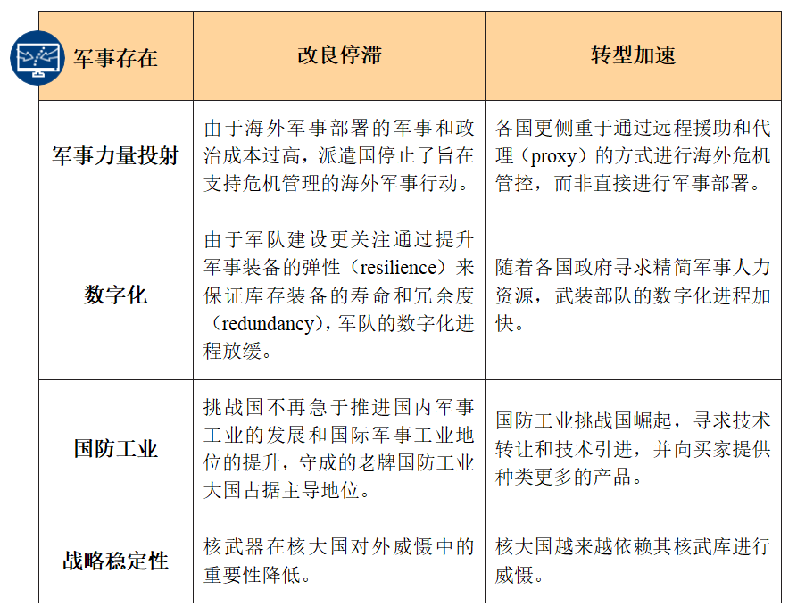
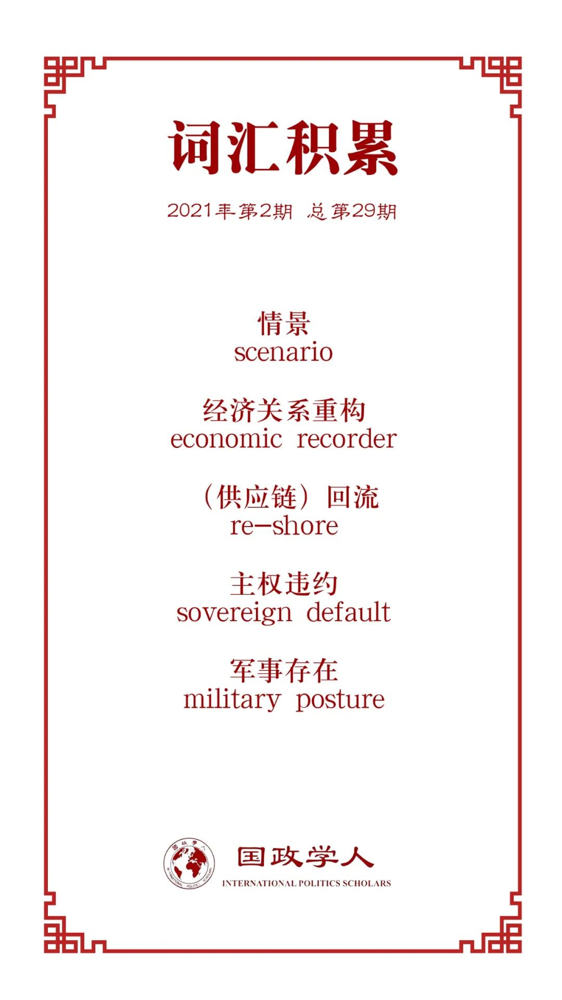

收录于合集

作品简介
【作者】 英国国际战略研究所“国防与军事研究分析”小组，主要研究，涉及军事安全政策、国防开支及采购、国防工业以及新技术的影响。其主要成员有国防军事研究主任Bastian Giegerich，军事航天高级研究员Douglas Barrie，陆战高级研究员Ben Barry，国防军事（海军）分析研究员Jonathan Bentham，国防军事研究员Henry Boyd，海军和海上安全高级研究员Nick Childs，国防军事研究员Hugo Decis等。
【编译】 房宇馨（国政学人编译员，北京外国语大学国际关系学院硕士）
【校对】 杨稚珉
【审核】 朱晓洁
【排版】 黄婷婷
【美编 】张越涵
【来源】 The Defence and Military Analysis team.(2020). The COVID-19 Pandemic: Scenarios to Understand the International Impact. Retrieved November 2, 2020, from The International Institute for Strategic Studies Website: https://www.iiss.org/blogs/research-paper/2020/11/covid-19-international- impact.
【归档】 《国际关系前沿》2021年第2期，总第29期。
智库简介
英国国际战略研究所（The International Institute for Strategic Studies，IISS）是英国著名智库，在全球安全、政治风险和军事冲突问题的研究方面有着卓越成就，素有“世界战略思想库”之称，现总部位于英国伦敦。目前，IISS研究成果主要发表于：《生存》（Survival）、《阿德尔菲系列》（Adelphi Series）、《战略调查》（Strategic Survey）、《军事平衡》（Military Balance）、《战略评论》（Strategic Comments）等。其中，《生存》是伴随IISS成立而创办的旗舰型期刊，每年出版6期，是当今外交政策和战略研究领域的重量级刊物。此外，研究所每年定期或不定期在世界各地举办多种形式的会员年会、学术论坛以及IISS国际安全峰会。其中被推崇为“军事界的达沃斯”的亚洲安全峰会“香格里拉对话”已经成功召开18届。
后疫情时代国际关系的四种可能情景
The COVID-19 Pandemic:
Scenarios to Understand the International Impact
文章导读
虽然目前确切预测新冠疫情的影响为时尚早，但可以就疫情的中期前景进行合理探索。本报告运用情景分析的研究方法，以六类推动变革的集群因素来建构四大情景，试图探究新冠疫情对未来五年全球政治、经济和军事均势可能造成的影响。
01
六类集群因素
报告以六类推动变革的集群（cluster）来建构情景（scenario）：
（1）政治领域的两类集群是治理（governance）与地缘政治（geopolitics）， 其中治理集群主要关注社会凝聚力、民粹主义、国家角色、民族主义和国家实力，而地缘政治集群则侧重于国际领导力和国际同盟，具体分析中国、俄罗斯和美国等大国的国际角色，也包括欧盟以及各中等强国的地缘政治存在。
表1 政治领域：治理集群

表2 政治领域：地缘政治集群

（2）经济领域的两类集群是经济关系重构（economic reordering）和经济环境（economic circumstances）， 其中前者涉及区域主义、保护主义、供应链动态和中国的技术领先地位，而后者受就业、公共债务、金融、能源等因素的影响。
表3 经济领域：经济关系重构集群

表4 经济领域：经济环境集群

（3）军事领域的两类集群是武装冲突（armed conflict）和军事存在（military posture）， 其中武装冲突集群主要关乎威胁感知、大国战争、中等大国冲突和国内暴力，而军事存在集群主要涉及对军事力量投射、武装力量数字化、国防工业动态、战略稳定性和核武器作用。
表5 军事领域：武装冲突集群

表6 军事领域：军事存在集群

02
后疫情时代国际关系的四种可能情景
（1）情景一：“希望仍存”（Silver Linings）
2025年地缘政治总体特点是国际合作增加和国内治理挑战减少，世界呈现以中国、欧盟和美国为核心的G3格局。 尽管新冠疫情对全球化造成了深刻影响，但全球经济能够实现迅速而全面的复苏，全球化进程基本维持。国际和国内武装冲突有所减少，军事存在越来越受到先进技术和适度海外行动的驱动。
在2020年至2021年间，受远程办工和隔离政策的影响， 经济活动正在加速向数字化转型 。2022年经济复苏总体呈V型发展，全球产出恢复至新冠疫情前的水平。此后两年，油价保持在每桶50美元以下，刺激经济实现强劲增长。新冠肺炎疫情引起人们重新审视人与自然关系、改善公共卫生，加之疫情严重时期多国停工停产，全球诸多环境指标得到了明显改善，多国政府借此机会推进“绿色协议”和“绿色创新”。
随着疫情的全球蔓延，政府对经济的持续干预极大地缓释了新冠危机的冲击，治理能力获得广大民众的认可与支持 。同时，各国政府打破了以往通过财政紧缩措施控制高水平的公共债务的主导模式，市场对高额公共债务的水平容忍度也在提高。政府倾向于依赖金融抑制，对存贷款利率设置上限，对部分银行加大干预力度并对其他银行提出高流动性要求。 但美洲和欧洲的民粹主义领导人治下的国家在防控疫情与经济复苏方面表现不佳，其领导力备受质疑 。许多国家放弃财政紧缩政策，也使民粹主义势头有所下降。
新冠疫情造成了一场全球性危机，促使许多国家重拾对多边主义解决办法的信心。 2022年，20国集团轮值主席国印度将以G20新德里峰会为契机，与其他中等强国一道，结成以议题为基础的多边联盟，并发起了旨在实现联合抗疫的“全球反新冠联盟”（GC3）。回顾二战后国际经济关系的重建，美国重拾布雷顿森林会议精神，说服欧盟和中国共建联盟，以遏制疫情期间出现的保护主义倾向。由此， 民粹主义者鼓吹的“去全球化”论调再无市场，经济民族主义思潮也不再流行。 但是，关于供应安全的争论的确引起了部分国家的警惕，它们选择在食品和药品领域对供应链进行有限的“在岸内包”（on-shoring）。
经改革后的世界贸易组织的协调， 美中贸易关系正朝着竞争而非对抗的方向发展， 有助于促进全球经济复苏。但西方对中国在技术领域的崛起依旧高度担忧，因为中国会持续推进国际技术引进和军民融合理论运用相结合的研发计划。“数字丝绸之路”在中国对外合作中的作用日益重要，同时，“健康丝绸之路”理念也成为了“一带一路”倡议中的核心组成部分。通过紧密联系的“健康丝绸之路”与“数字丝绸之路”，中国在全球大规模开展了围绕数字健康监测和接触者追踪的国际项目，并成功向“一带一路”伙伴国出口了大量数字健康工具。
中国寻求取得更强有力的全球领导地位，迫使美国重新承诺维系现有的联盟关系。然而，欧盟各国政府认为无法寄希望于美国的游移不定，应加强欧盟自身的战略自治。因此，欧盟在2023年已就实现安全和防务一体化达成一致。而俄罗斯方面，由于“政府俘获”（state capture）体系的建立，加之能源价格持续走低和西方国家在克里米亚事件后对俄罗斯长达10年的制裁，俄罗斯经济始终无法摆脱新冠危机的打击，普京由此遭受到了较大的执政危机。为保护巩固总统政权，普京在2025年减少了在乌克兰的活动，寻求与美欧和解，缓解制裁压力，推动俄罗斯的经济现代化。但需要注意的是，俄罗斯的回旋余地将受到持续走低的油价限制。总体来看，俄罗斯被置于G3格局之外，其疲弱的经济将进一步削弱俄罗斯在国际谈判中的能力，但其可能会利用对欧洲国家的能源出口来确保某种政治影响力。
为防新冠蔓延，世界各热点地区的武装冲突强度也有所减轻，有关各方宣布实施人道主义停火。与此同时，在疫情的影响之下，许多西方国家选择大幅减少进行危机管控的海外军事部署。但核大国越来越依赖其核武库进行威慑。拜登率先提出了一项倡议，即在安理会常任理事国之中就美国核现代化计划修正案达成一项“不首先进行先发核打击”条约（no- first-strike treaty），该条约起到了一定的战略稳定作用。为减少海外军事人力资源投入，各国加大了对先进军事技术和能力的投资，以提升远程军事打击效果。
（2）情景二：“和平不再”（Downfall）
国内治理结构被不断削弱，国际地缘政治以冲突为主要特点。 新冠疫情导致国际政治关系出现了根本性调整。缺乏共识、缺乏互信和忽视法治都会增加曲解、误判和意外升级的风险。 经济局部复苏依旧缓慢，经济关系重构导致原有的国际关系支离破碎。大国战争已具备了现实的可能性，而由于疫情所加重的国家脆弱性（state fragility）更是导致了武装冲突的增加。
2025年，全球经济仅显示了出微弱的复苏迹象，全球产出低于2019年疫情前的水平。产油国为实现财政预算平衡，通过限制产量将油价控制在每桶70美元以上，但却致使全球经济复苏形势更加复杂。疫情造成的全球需求下降引发了广泛的通货紧缩，限制了各国政府通过货币政策工具进行干预的能力。几个“系统重要性”（systemically important）新兴国家甚至了出现外债违约。因后疫情时代经济低迷，全球复苏总体呈L形走势。所以，将在2020年至2025年走入职场的一批人被称为“L型一代”（Generation L），整体就业形势不容乐观。
在一些国家中，由于政府始终未能对新冠疫情的爆发做好善后工作，公众对政府的信任度下降，国内不满情绪上升。发达国家内部的不平等正在加剧，社会凝聚力遭到破坏，并且发展中国家和发达国家之间的差距也在不断扩大。在国内，民粹主义领导人利用日益削弱的社会结构，扩展自身的政治声势。在国际上，民粹主义政府大肆煽动民族主义，为转嫁国内矛盾而对他国进行污名化指责，同时政府会以国家利益为名控制人口流动和经济活动，并加强边境管制。
在此情形下，政治不确定性和政治分歧将对国际贸易流动产生连锁反应， 中国、欧盟和美国的经济都呈内向型发展，各国政府将维持供应链的弹性和安全作为其长期战略目标， 导致外国直接投资减少。美国推动与日本、澳大利亚、印度、韩国等盟友国家共建名为“经济繁荣网络”（Economic Prosperity Network）的联盟，促进供应链回流，并与中国经济脱钩。
欧盟方面，外部环境的变化将对欧盟带来负面影响：多边主义减弱；不再看重国际法和规范；全球产业链走向“碎片化”（splinter）；为管控疫情、控制移民流动和推行经济保护主义，人员流动可能会受到更多限制。由于成员国专注于内部事务，北约与欧盟的内部政治团结被大大削弱，美国和欧洲国家的军事实力受到影响，欧盟意图改善军事能力整合的雄心化为泡影。
在后疫情时代，中国将优先选择进行国内经济的复苏以保持政权稳定，但中国未能实现“中国制造2025”的技术目标。在国际上，由于中国严格控制对外投资，“一带一路”倡议下的全球基础设施项目陷入了停滞。
俄罗斯方面，近年来不断上涨的能源价格使俄罗斯的国家预算免于崩溃之难，但经济的持续低迷以及政府在亟需基础设施投资方面的无能，大大滋生了不满情绪。 国内的脆弱性导致俄罗斯的外交行为变得越发激进，意图借挑起外部危机和煽动民族主义情绪，以转移国内压力和推动社会军事化。
紧张局势导致大国之间爆发战争的可能性加大，各国的国防政策侧重于在短期内提高常规威慑能力，更多国防开支被用于维持战备状态。其直接影响是，武装部队数字化的建设暂时放缓，用于核库存现代化的开支也有所削减。
（3）情景三：“转型迷失”（Lost in Transition）
各国之间相互抗衡，全球局势极为不稳定。在政治领域，地缘政治局势受到武装冲突的破坏，但国内治理结构并未出现较大变动。 美国和欧盟地缘政治影响力的下降速度更快、幅度更大，博弈天平正在向中国和俄罗斯倾斜。 在经济上，全球总体复苏缓慢，中美可能会经济脱钩。在军事上会出现新的国际同盟，但疫情会对非洲的安全与稳定造成较大影响。
民粹主义领导人被认为无法应对新冠疫情带来的影响，于是中间派政客崛起将之取代。尽管各国央行采取了积极的货币政策，但经济危机带来的通缩压力依然存在。国内严峻的政治和经济形势使各国几乎无力关注国际安全挑战，参与多边谈判的意愿正在下降。
美国方面，“疫情大萧条”（pandemic depression）导致人们呼吁美国在外交政策上保持克制，并减少国际事务干预。2021年初，拜登治下的内向型发展趋势在美国占据了主导地位，美国没有放弃其既有的联盟，但却明确表示对提供政治或军事领导不感兴趣，并将继续减少对双边和多边防务合作的投资。 在军事方面，这种“转型迷失”的局面将预示着传统均势政治的回归。 在这种情况下， 美国可能会扮演离岸平衡手的角色，但总体能力有限 ，因其需要牺牲海外军事投射能力，以应对国土防卫和非传统安全威胁。
欧盟正在竭力抵御因疫情导致的边境封锁带来的民族主义情绪蔓延。由于欧洲一体化陷入停滞（甚至逆转），欧盟有可能分裂成几个相互竞争的小成员国集团，致使欧盟各机构出现政治僵局。欧洲的内部分歧易被外部国家所利用，在“转型迷失”的情况下，欧洲可能会成为大国利益竞争的战场。
中国方面，虽然经济发展疲软，但总体呈现复苏迹象。虽然结构性经济减速压力加剧了现有的债务和生产力问题，但中国政府决意利用美国和欧洲的战略收缩（retrenchment），抢占全球领导地位，同时利用其军民融合发展理论，实现在技术方面大发展。 由于西方国家不断推动与中国的经济脱钩，中国也在寻求减少对西方供应链的依赖。 与此同时，中国的国际交往取得积极进展：中国与某些欧洲国家达成了经济和外交协议；在“一带一路”倡议之下，中国继续向对象国（特别是非洲国家）提供软贷款启动基础设施建设项目；并且，中国发起了一场国际公共卫生运动，向全球分发了大量中国生产的新冠疫苗。军事方面，尽管中国大力推进军队数字化建设，但美欧却更为重视恢复军事应变能力和国土安全防御能力，数字化进程放缓。
俄罗斯方面，普京在2024年总统大选中成功连任，而后与中国签署了《哈尔滨协定》（Treaty of Harbin），内容涉及经济、科学和国防等方面的合作。另外，中俄元首还宣布将在2025年底前促成上海合作组织与集体安全条约组织的合并。与此同时，中俄结盟可能会产生更深远的影响，印太地区出现核扩散浪潮的可能性将增加。澳大利亚、日本和大韩民国可能会寻求提升国家战略威慑力量，以防范中俄同盟。
脆弱的社会经济结构放大了新冠疫情对非洲的影响。疫情期间，非洲外国直接投资流量将继续大幅下降，农民的生产生活也大受影响。在国内，国家无法为居民提供最基本的生活需要，使有组织犯罪集团和民兵有了可乘之机。与此同时，国际社会也无暇关注非洲大陆的危机。出于对国内经济复苏状况的担忧以及在疫情期间进行军事部署的医疗和财政成本，以往向非洲派遣维和部队的国家大多减少了对非洲的人道主义援助。但非洲地区的不稳定和暴力将增加欧洲的移民压力，并提升恐怖主义的风险，欧盟有可能加强内部的防务合作。
（4）情景四：“国家独行”（Home Alone）
经济方面，世界经济复苏极不均衡，地区差异严重。包括美国和欧盟成员国在内的经济体出现了巨额预算赤字，累积的公共债务已超过GDP的100%，在某些情况下甚至超过200%。政治方面，持续的社交媒体运动扩大了社会分歧，政府未能及时采取措施管控社交媒体中虚假信息的传播，民众对政治机构的信任度已降至历史最低水平。
随着大国竞争的加剧，促进国际合作的可能性在不断下降。同时， 各国建立区域和本土供应链的意愿在提升，使全球化面临倒退风险。 中国在全球供应链中的地位受到影响，但由于其国内市场的规模，中国依然能够保持对外国企业的吸引力，大型企业开始采取“本地+中国”的生产战略。
然而，欧盟将以更为自信的姿态影响地缘政治格局。欧洲认为，由于成员国各自应对全球挑战的能力不断遭到削弱，从而需要在欧盟层面加强协调。因此， 疫情带来的恐慌情绪为欧盟深化安全和防务合作提供了动力。
中国方面，在2021年中国共产党成立100周年之际，中国努力刺激国内经济快速发展，为亚洲其他经济体的发展做出了贡献。但俄罗斯认为，中国在中亚地区日益增长的政治与经济影响力对俄罗斯的利益造成了威胁。与此同时，美国缺乏财政手段和国内政治支持来对抗中国和俄罗斯的强硬姿态。
军事方面，由国家脆弱性导致的武装冲突明显增加，而国际行为体提供人道主义援助和危机管控资源的能力和意愿急剧下降。
03
结论
新冠肺炎疫情是一次重大突发公共卫生事件，将在未来的三到五年中，对全球各国及各地区的政治、经济和军事发展产生巨大影响。后疫情时代的各种现象很可能在病毒出现之前已经存在，新冠充当了这些趋势的助推器。
关于新冠疫情的最终影响目前尚无定论。因此，必须要系统地考虑各种可能性。本文提出的各种情景不是预测，也不是为了确定最可能的结果。相反，提出这些情景的意图是揭开“未来世界”的面纱，帮助人们在持续不确定性的背景下思考未来。此外，这些情景有助于帮助决策者把握未来出现的各种情况，确定行动方案，并产生有益的结果。
译者评述
肆虐全球的新冠肺炎疫情是一次典型的“黑天鹅”事件，它给世界各国带来了全方位的负面影响，甚至很可能会引发全球化的倒退。针对新冠疫情带来的各种“不确定性”，本篇报告运用了情景分析的研究方法，建构出了四种可能的情景，分别描述了后疫情时代在四种情景下可能发生的不同状况。
报告按照以下步骤展开：首先，报告界定出了六个驱动性集群因素（即关键的不确定性因素）并进行了具体的描述；第二步，从六大因素中选择了与场景联系最为紧密的因素，在此基础上建构出四个场景，并且按照总分的逻辑细致梳理了各种可能的地缘政治、地缘经济及军事安全形势，也预判了中国、美国、欧盟、俄罗斯主要行为体在新情景中的行为；最后，报告评估了各个情景在政治、经济和军事方面的启示与影响，对情景进行“学习”。
新冠肺炎疫情这一突发性公共卫生危机对全球经济以及对国家间地缘政治关系的影响存在着巨大的不确定性，这就要求我们尝试运用新的方法去解决问题。情景分析法的作用在于，我们可以将一系列紧密联系且相互作用的的不确定性因素按照某一规律进行逻辑串联并进行系统性叙述，绘制关于后疫情时代国际关系走向的多种可能性图景，从而为进行更全面准确的决策提供更有价值的参考。情景分析的研究方法并不要求对未来进行精准的预测，而是帮助人们在高度不确定的世界里掌握一种前瞻性。
鉴于未来本质上是未知且复杂的，情景分析的研究方法给了我们更多启发和思考。尽管当前我国疫情管控已足见成效，但随着疫情在部分国家的快速蔓延，我国不仅要做好与疫情长期共存的准备，而且要针对正在发生的以及疫情过后的世界巨变做出相应预案。适应新形势新要求，政府需在可预见的周期内，对后疫情时代一切可能的发展状况进行充分的估计和研究，对未来的形势创设多种不同的情景预设，从每一个有学习价值的情景建构中感知和把握未来潜在的各种新机遇、新挑战，要将有参考价值的所有可能性结果纳入决策判断，增强不同方案的预见性，加强对事件尤其是危机事件的预知能力，最大程度地把未来的不确定性压缩在可控的范围之内，促使决策者在思想上、行为上等都能够显现出“解析未来”的力量。
参考文献
[1]秦小燕：《英国国际战略研究所的运行机制与发展态势》，《智库理论与实践》2017年第5期。
[2]牛长振：《国际关系中的情景分析》，《国际政治科学》2012年第3期。
词汇整理

文章观点不代表本平台观点，本平台评译分享的文章均出于专业学习之用, 不以任何盈利为目的，内容主要呈现对原文的介绍，原文内容请通过各高校购买的数据库自行下载。

好好学习，天天“在看”
国政学人
支持学术公益与知识传播
微信扫一扫赞赏作者 __赞赏
已喜欢，对作者说句悄悄话
取消 __
发送给作者
发送
最多40字，当前共字
上一页 1/3 下一页
长按二维码向我转账
支持学术公益与知识传播
受苹果公司新规定影响，微信 iOS 版的赞赏功能被关闭，可通过二维码转账支持公众号。